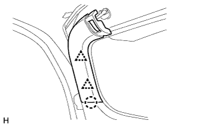
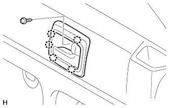
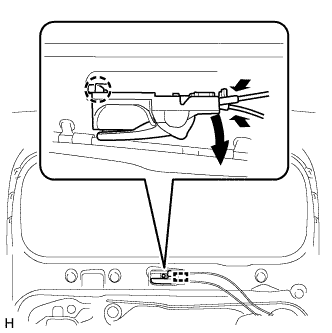
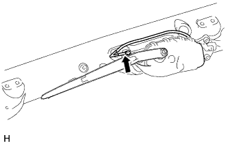
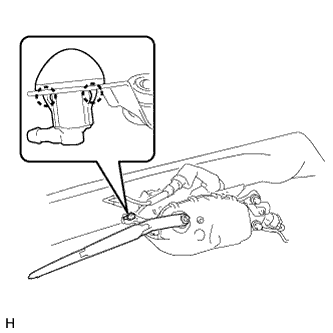
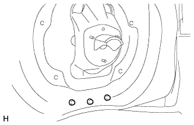
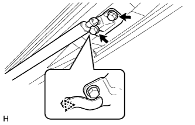
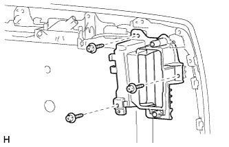

ДВЕРЬ БАГАЖНОГО ОТДЕЛЕНИЯ > РАЗБОРКА |
| 1. СНИМИТЕ ЧЕХОЛ ЗАПАСНОГО КОЛЕСА (для моделей с кронштейном запасного колеса на двери багажного отделения) |
 |
Освободите 7 захватов и переместите накладку чехла запасного колеса, чтобы она не мешала.
| 2. СНИМИТЕ ЧЕХОЛ ЗАПАСНОГО КОЛЕСА (для моделей с кронштейном запасного колеса на двери багажного отделения) |
 |
Выверните болт.
Переместите рычаг.
 |
Освободите 8 захватов и снимите чехол запасного колеса.
| 3. СНИМИТЕ ЗАПАСНОЕ КОЛЕСО (для моделей с кронштейном запасного колеса на двери багажного отделения) |
| 4. СНИМИТЕ ЧЕХОЛ ЗАПАСНОГО КОЛЕСА № 2 (для моделей с кронштейном запасного колеса на двери багажного отделения) |
 |
Выверните 4 винта и снимите чехол запасного колеса № 2.
| 5. СНИМИТЕ КРОНШТЕЙН ТЕЛЕКАМЕРЫ (для моделей с кронштейном запасного колеса на двери багажного отделения) |
Отсоедините разъем и зажим.
Выверните 2 болта и снимите кронштейн телекамеры с задней телекамерой.
| 6. СНИМИТЕ ЗАДНЮЮ ТЕЛЕКАМЕРУ В СБОРЕ (для моделей с кронштейном запасного колеса на двери багажного отделения) |
Отсоедините разъем и снимите жгут проводов заднего окна № 2.
Выверните болт и снимите заднюю телекамеру.
| 7. СНИМИТЕ КРОНШТЕЙН ЗАПАСНОГО КОЛЕСА В СБОРЕ (для моделей с кронштейном запасного колеса на двери багажного отделения) |
 |
Выверните 2 болта, отверните 2 гайки и снимите кронштейн запасного колеса.
 |
С помощью торцевого ключа "TORX" E10 выверните 2 резьбовые шпильки.
| 8. СНИМИТЕ ЦЕНТРАЛЬНУЮ ОБЛИЦОВКУ ДВЕРИ БАГАЖНОГО ОТДЕЛЕНИЯ |
 |
Освободите 4 фиксатора и снимите центральную облицовку двери багажного отделения.
| 9. СНИМИТЕ ЛЕВУЮ БОКОВУЮ ОБЛИЦОВКУ ДВЕРИ БАГАЖНОГО ОТДЕЛЕНИЯ |
 |
Освободите 2 фиксатора и захват и снимите боковую облицовку двери багажного отделения.
| 10. СНИМИТЕ ПРАВУЮ БОКОВУЮ ОБЛИЦОВКУ ДВЕРИ БАГАЖНОГО ОТДЕЛЕНИЯ |
|  |
Освободите 2 фиксатора и захват и снимите боковую облицовку двери багажного отделения.
| 11. СНИМИТЕ ОБЛИЦОВОЧНУЮ НАКЛАДКУ ДВЕРИ БАГАЖНОГО ОТДЕЛЕНИЯ |
 |
Снимите облицовочную накладку двери багажного отделения, как показано на рисунке.
| 12. СНИМИТЕ ВЕРХНЮЮ ПАНЕЛЬ ЯЩИКА ДЛЯ ИНСТРУМЕНТОВ В СБОРЕ |
 |
Снимите верхнюю панель ящика для инструментов в сборе, как показано на рисунке.
| 13. СНИМИТЕ ЯЩИК ДЛЯ ИНСТРУМЕНТОВ |
 |
Освободите 2 захвата и снимите ящик для инструментов.
| 14. СНИМИТЕ КРЫШКУ ЗАМКА ДВЕРИ БАГАЖНОГО ОТДЕЛЕНИЯ (для моделей без кронштейна запасного колеса на двери багажного отделения) |
 |
С помощью съемника молдингов B открепите фиксатор и 6 захватов, и снимите крышку замка двери багажного отделения.
| 15. СНИМИТЕ ДЕРЖАТЕЛЬ ВНУТРЕННЕЙ РУЧКИ ДВЕРИ БАГАЖНОГО ОТДЕЛЕНИЯ (для моделей с противоположно расположенными сиденьями) |
|  |
Выверните винт.
Освободите 5 захватов и снимите оправу внутренней ручки двери багажного отделения.
| 16. СНИМИТЕ ПАНЕЛЬ ОБЛИЦОВКИ ДВЕРИ БАГАЖНОГО ОТДЕЛЕНИЯ В СБОРЕ |
 |
Отцепите захват и снимите крышку.
 |
Выверните винт.
Для моделей без кронштейна запасного колеса на двери багажного отделения:
 |
Выверните болт.
Освободите 15 фиксаторов и снимите облицовочную панель двери багажного отделения.
Для моделей с кронштейном запасного колеса на двери багажного отделения:
 |
Выверните болт.
Освободите 16 фиксаторов и снимите облицовочную панель двери багажного отделения.
Для моделей с противоположно расположенными сиденьями:
 |
Выверните винт и болт.
Освободите 15 фиксаторов и снимите облицовочную панель двери багажного отделения.
| 17. СНИМИТЕ ВНУТРЕННЮЮ РУЧКУ ДВЕРИ БАГАЖНОГО ОТДЕЛЕНИЯ В СБОРЕ (для моделей с противоположно расположенными сиденьями) |
|  |
Отсоедините направляющую.
Освободите захваты и снимите внутреннюю ручку.
Отсоедините 2 троса от внутренней ручки в сборе.
| 18. СНИМИТЕ КРОНШТЕЙН ЯЩИКА ДЛЯ ИНСТРУМЕНТОВ |
 |
Выверните 4 болта и снимите 2 кронштейна ящика для инструментов.
| 19. СНИМИТЕ КРЫШКУ ТЕХНОЛОГИЧЕСКОГО ОТВЕРСТИЯ ДВЕРИ БАГАЖНОГО ОТДЕЛЕНИЯ |
 |
Снимите крышку технологического отверстия.
| 20. СНИМИТЕ ЛЕВУЮ НАРУЖНУЮ РУЧКУ ДВЕРИ БАГАЖНОГО ОТДЕЛЕНИЯ |
Для моделей с кронштейном запасного колеса на двери багажного отделения:
 |
Удалите пробку отверстия.
| *1 | Пробка отверстия |
Отверните 2 гайки и снимите наружную ручку двери багажного отделения.
Отсоедините трос.
Для моделей без кронштейна запасного колеса на двери багажного отделения:
 |
Отверните 2 гайки и снимите наружную ручку двери багажного отделения.
Отсоедините трос.
| 21. СНИМИТЕ ЗАМОК ДВЕРИ БАГАЖНОГО ОТДЕЛЕНИЯ В СБОРЕ |
Отсоедините разъем.
Выверните 3 винта с помощью торцевого ключа "TORX" T30.
| *A | для моделей в стандартной комплектации |
| *B | для моделей с кронштейном запасного колеса на двери багажного отделения, с противоположно расположенными сиденьями |
 |
Отсоедините трос и снимите замок двери багажного отделения в сборе.
Снимите уплотнение жгута проводов замка двери с замка двери багажного отделения.
| 22. СНИМИТЕ ТРОС УПРАВЛЕНИЯ ЗАМКОМ ДВЕРИ БАГАЖНОГО ОТДЕЛЕНИЯ В СБОРЕ |
Отсоедините трос.
| 23. СНИМИТЕ ЖГУТ ПРОВОДОВ ЗАДНЕГО ОКНА № 1 (для моделей с кронштейном запасного колеса на двери багажного отделения) |
Отсоедините разъем.
| *a | Наружная сторона |
| *b | Внутренняя сторона |
Освободите 2 зажима и снимите жгут проводов заднего окна № 1.
| 24. СНИМИТЕ ЗАДНЮЮ ТЕЛЕКАМЕРУ В СБОРЕ (для моделей без кронштейна запасного колеса на двери багажного отделения) |
Отсоедините разъем.
Выверните 2 болта и снимите заднюю телекамеру.
| 25. СНИМИТЕ ФИКСАТОР ОБЛИЦОВКИ ДВЕРИ БАГАЖНОГО ОТДЕЛЕНИЯ № 2 (для моделей без системы монитора заднего вида) |
Для моделей без кронштейна запасного колеса на двери багажного отделения:
 |
Выверните 2 винта и снимите держатель наружной накладки двери багажного отделения № 2.
| 26. СНИМИТЕ МОЛДИНГ ЛЕВОЙ НИЖНЕЙ НАРУЖНОЙ ОБЛИЦОВКИ ДВЕРИ БАГАЖНОГО ОТДЕЛЕНИЯ (для моделей без кронштейна запасного колеса на двери багажного отделения) |
 |
С помощью отвертки освободите 5 захватов и снимите молдинг наружной облицовки.
| *1 | Защитная клейкая лента |
| 27. СНИМИТЕ МОЛДИНГ ПРАВОЙ НИЖНЕЙ НАРУЖНОЙ ОБЛИЦОВКИ ДВЕРИ БАГАЖНОГО ОТДЕЛЕНИЯ (для моделей без кронштейна запасного колеса на двери багажного отделения) |
Освободите 5 захватов и снимите молдинг.
| 28. СНИМИТЕ ЛЕВУЮ НИЖНЮЮ НАРУЖНУЮ ОБЛИЦОВКУ ДВЕРИ БАГАЖНОГО ОТДЕЛЕНИЯ В СБОРЕ (для моделей без кронштейна запасного колеса на двери багажного отделения) |
 |
Отсоедините разъем и зажим.
Выверните винт.
Снимите двухстороннюю клейкую ленту.
С помощью отвертки освободите 5 захватов и снимите наружную облицовку.

| *1 | Защитная клейкая лента | *2 | Двухсторонняя клейкая лента |
| 29. СНИМИТЕ ПРАВУЮ НИЖНЮЮ НАРУЖНУЮ ОБЛИЦОВКУ ДВЕРИ БАГАЖНОГО ОТДЕЛЕНИЯ В СБОРЕ (для моделей без кронштейна запасного колеса на двери багажного отделения) |
Выверните винт.

| *1 | Двухсторонняя клейкая лента | - | - |
Освободите 4 захвата и снимите нижнюю наружную облицовку двери.
| 30. СНИМИТЕ ВЫКЛЮЧАТЕЛЬ МЕХАНИЗМА ОТКРЫВАНИЯ ЗАДНЕГО СТЕКЛА В СБОРЕ (для моделей без кронштейна запасного колеса на двери багажного отделения) |
 |
Выверните винт и снимите выключатель механизма открывания.
| 31. СНИМИТЕ КРЫШКУ ВЫКЛЮЧАТЕЛЯ (для моделей без кронштейна запасного колеса на двери багажного отделения) |
 |
Снимите крышку выключателя.
| 32. СНИМИТЕ УПЛОТНИТЕЛЬ ДВЕРИ БАГАЖНОГО ОТДЕЛЕНИЯ № 2 (для моделей без кронштейна запасного колеса на двери багажного отделения) |
 |
Снимите уплотнитель двери багажного отделения № 2.
| 33. СНИМИТЕ ЛЕВЫЙ ОХВАТЫВАЮЩИЙ БОКОВОЙ УПОР ДВЕРИ БАГАЖНОГО ОТДЕЛЕНИЯ В СБОРЕ |
Выверните 2 болта и снимите охватывающий боковой упор двери багажного отделения.
| 34. СНИМИТЕ ПОДКЛАДКУ УПОРА ДВЕРИ БАГАЖНОГО ОТДЕЛЕНИЯ № 2 |
 |
Снимите подкладку упора двери багажного отделения № 2.
| 35. СНИМИТЕ УПОР ДВЕРИ БАГАЖНОГО ОТДЕЛЕНИЯ № 1 |
С помощью съемника фиксаторов освободите 2 захвата и снимите упор двери багажного отделения № 1.
| 36. СНИМИТЕ ПОДКЛАДКУ ПАНЕЛИ ДВЕРИ БАГАЖНОГО ОТДЕЛЕНИЯ (для моделей без кронштейна запасного колеса на двери багажного отделения) |
 |
Снимите 4 подкладки панели двери багажного отделения.
| 37. СНИМИТЕ ЗАМОК ЗАДНЕГО ОКНА В СБОРЕ (для моделей без кронштейна запасного колеса на двери багажного отделения) |
 |
Отсоедините разъем.
Выверните 3 болта и снимите замок заднего окна в сборе.
| 38. СНИМИТЕ ПАНЕЛЬ ЗАДНЕГО СПОЙЛЕРА № 1 (для моделей без кронштейна запасного колеса на двери багажного отделения) |
 |
Отсоедините крепежную ленту и 5 фиксаторов и снимите задний спойлер № 1.
| *1 | Крепежная лента |
| 39. СНИМИТЕ ПРАВУЮ ПАНЕЛЬ ЗАДНЕГО СПОЙЛЕРА |
|
Отсоедините крепежную ленту и 5 фиксаторов и снимите задний спойлер № 1.
| *1 | Крепежная лента |
| 40. СНИМИТЕ ЗАДНИЙ СПОЙЛЕР В СБОРЕ |
Для моделей без кронштейна запасного колеса на двери багажного отделения:
Снимите задний спойлер в сборе (Нажмите здесь).
Для моделей с кронштейном запасного колеса на двери багажного отделения:
Снимите задний спойлер в сборе (Нажмите здесь).
| 41. СНИМИТЕ ЖЕСТКУЮ ПОДКЛАДКУ ДВЕРИ БАГАЖНОГО ОТДЕЛЕНИЯ № 2 (для моделей с кронштейном запасного колеса на двери багажного отделения) |
 |
Наклейте защитную ленту вокруг жесткой подкладки двери багажного отделения № 2.
С помощью съемника фиксаторов освободите 2 захвата и снимите жесткую подкладку двери багажного отделения № 2.
| *1 | Защитная клейкая лента |
| 42. СНИМИТЕ ФОРСУНКУ ЗАДНЕГО СТЕКЛООМЫВАТЕЛЯ В СБОРЕ |
|  |
Отсоедините шланг.
|  |
Освободите 2 захвата и снимите форсунку стеклоомывателя.
| 43. СНИМИТЕ РЫЧАГ ЗАДНЕГО СТЕКЛООЧИСТИТЕЛЯ |
 |
Отверните гайку и снимите рычаг заднего стеклоочистителя.
| 44. СНИМИТЕ ДВИГАТЕЛЬ ЗАДНЕГО СТЕКЛООЧИСТИТЕЛЯ В СБОРЕ |
 |
Отсоедините шланг стеклоомывателя и разъем электродвигателя стеклоочистителя.
| *A | для моделей с кронштейном запасного колеса на двери багажного отделения |
| *B | для моделей без кронштейна запасного колеса на двери багажного отделения |
 |
Выверните 3 болта.
| *A | для моделей с кронштейном запасного колеса на двери багажного отделения |
| *B | для моделей без кронштейна запасного колеса на двери багажного отделения |
Отсоедините 2 направляющих и снимите электродвигатель заднего стеклоочистителя.
| 45. СНИМИТЕ КРОНШТЕЙН ЭЛЕКТРОДВИГАТЕЛЯ СТЕКЛООЧИСТИТЕЛЯ ОКНА ДВЕРИ БАГАЖНОГО ОТДЕЛЕНИЯ № 1 (для моделей с кронштейном запасного колеса на двери багажного отделения) |
 |
С помощью съемника фиксаторов отсоедините зажим.
Выверните 3 болта.
С помощью съемника фиксаторов освободите 2 фиксатора и снимите кронштейн электродвигателя стеклоочистителя окна двери багажного отделения № 1.
| 46. СНИМИТЕ КРЫШКУ ЗАЩЕЛКИ ЗАМКА ДВЕРИ БАГАЖНОГО ОТДЕЛЕНИЯ (для моделей без кронштейна запасного колеса на двери багажного отделения) |
| 47. СНИМИТЕ ЛЕВУЮ СТОЙКУ ЗАДНЕГО ОКНА В СБОРЕ (для моделей без кронштейна запасного колеса на двери багажного отделения) |
 |
С помощью отвертки снимите 2 стопорных кольца, как показано на рисунке, и снимите стойку заднего стекла.
| *1 | Защитная клейкая лента |
| 48. СНИМИТЕ ПРАВУЮ СТОЙКУ ЗАДНЕГО ОКНА В СБОРЕ (для моделей без кронштейна запасного колеса на двери багажного отделения) |
| 49. ВЫВЕРНИТЕ БОЛТ СТОЙКИ ДВЕРИ БАГАЖНОГО ОТДЕЛЕНИЯ (для моделей без кронштейна запасного колеса на двери багажного отделения) |
 |
Выверните 2 болта стойки двери багажного отделения.
| *A | Для правой стороны |
| *B | Для левой стороны |
| 50. СНИМИТЕ СТЕКЛО ДВЕРИ БАГАЖНОГО ОТДЕЛЕНИЯ (для моделей без кронштейна запасного колеса на двери багажного отделения) |
 |
Снимите разъем и освободите 2 зажима.
 |
Выверните 4 болта и снимите стекло окна двери багажного отделения.
| 51. СНИМИТЕ ПОДКЛАДКУ ДВЕРИ БАГАЖНОГО ОТДЕЛЕНИЯ (для моделей с кронштейном запасного колеса на двери багажного отделения) |
|  |
Снимите 3 подкладки двери багажного отделения.
| 52. СНИМИТЕ ПЛАСТИНУ БУФЕРНОГО БРУСА ЗАДНЕГО БАМПЕРА |
Наклейте защитную ленту вокруг пластины буферного бруса заднего бампера.
Освободите 14 захватов и снимите пластину буферного бруса заднего бампера.

| *1 | Защитная клейкая лента | - | - |
| 53. СНИМИТЕ ОГРАНИЧИТЕЛЬ ОТКРЫВАНИЯ ДВЕРИ БАГАЖНОГО ОТДЕЛЕНИЯ |
|  |
Выверните 2 болта
С помощью съемника фиксаторов освободите фиксатор и снимите ограничитель открывания двери багажного отделения с нижним кронштейном крепления амортизатора двери багажного отделения.
 |
Освободите зажим жгута проводов.
Выверните 3 болта и снимите ограничитель открывания двери багажного отделения с нижним кронштейном крепления амортизатора двери багажного отделения.
| 54. СНИМИТЕ ЛЕВЫЙ НИЖНИЙ КРОНШТЕЙН КРЕПЛЕНИЯ АМОРТИЗАТОРА ДВЕРИ БАГАЖНОГО ОТДЕЛЕНИЯ |
Со стороны двери багажного отделения:
С помощью отвертки снимите стопорное кольцо, как показано на рисунке, и снимите ограничитель открывания двери багажного отделения.
С помощью съемника фиксаторов освободите фиксатор и снимите кронштейн крепления амортизатора двери багажного отделения.
Со стороны бампера:
С помощью отвертки снимите стопорное кольцо, как показано на рисунке, и снимите ограничитель открывания двери багажного отделения.
| 55. СНИМИТЕ НАРУЖНУЮ НАКЛАДКУ ДВЕРИ БАГАЖНОГО ОТДЕЛЕНИЯ В СБОРЕ |
Для моделей без кронштейна запасного колеса на двери багажного отделения:
Снимите наружную облицовку двери багажного отделения (Нажмите здесь).
Для моделей с кронштейном запасного колеса на двери багажного отделения:
Снимите наружную облицовку двери багажного отделения (Нажмите здесь).
| 56. СНИМИТЕ ШНУР ЛАМПЫ ОСВЕЩЕНИЯ НОМЕРНОГО ЗНАКА (для моделей без системы посадки и запуска) |
Для моделей без кронштейна запасного колеса на двери багажного отделения:
Снимите шнур лампы освещения номерного знака (Нажмите здесь).
Для моделей с кронштейном запасного колеса на двери багажного отделения:
Снимите шнур лампы освещения номерного знака (Нажмите здесь).
| 57. СНИМИТЕ ФИКСАТОР ОБЛИЦОВКИ ДВЕРИ БАГАЖНОГО ОТДЕЛЕНИЯ № 1 (для моделей без кронштейна запасного колеса на двери багажного отделения) |
|  |
Выверните 3 винта и снимите держатель наружной накладки двери багажного отделения № 1.
| 58. СНИМИТЕ КОЛПАК ЛАМПЫ ОСВЕЩЕНИЯ ЗАДНЕГО НОМЕРНОГО ЗНАКА (для моделей с кронштейном запасного колеса на двери багажного отделения) |
 |
Выверните 5 винтов и снимите колпак лампы освещения дверного знака.
| 59. СНИМИТЕ ВЫКЛЮЧАТЕЛЬ ЭЛЕКТРОННОГО КЛЮЧА НА ДВЕРИ БАГАЖНОГО ОТДЕЛЕНИЯ (для моделей без кронштейна запасного колеса на двери багажного отделения) |
 |
Снимите зажим.
 |
Выверните 2 винта.
Освободите 2 направляющих и снимите выключатель электронного ключа на двери багажного отделения.
| 60. СНИМИТЕ ВЫКЛЮЧАТЕЛЬ ЭЛЕКТРОННОГО КЛЮЧА НА ДВЕРИ БАГАЖНОГО ОТДЕЛЕНИЯ (для моделей с кронштейном запасного колеса на двери багажного отделения) |
 |
Выверните 2 винта.
Освободите 2 направляющих и снимите выключатель электронного ключа на двери багажного отделения.
| 61. СНИМИТЕ ЛАМПУ ОСВЕЩЕНИЯ НОМЕРНОГО ЗНАКА В СБОРЕ |
Для моделей без кронштейна запасного колеса на двери багажного отделения:
Снимите лампу освещения номерного знака (Нажмите здесь).
Для моделей с кронштейном запасного колеса на двери багажного отделения:
Снимите лампу освещения номерного знака (Нажмите здесь).